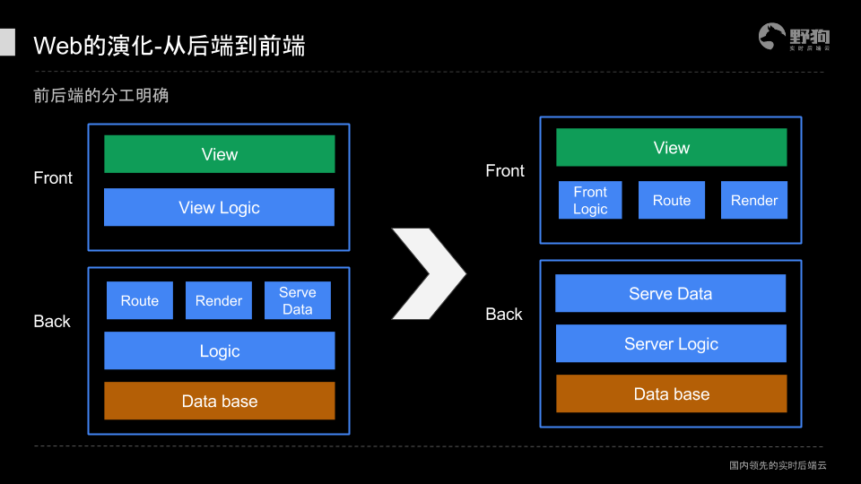

从静态走向动态
1994年可以看做前端历史的起点，这一年10月13日网景推出了第一版Navigator；这一年，Tim Berners-Lee创建了W3C；这一年，Tim的基友发布了CSS。还是这一年，为动态web网页设计的服务端脚本PHP以及笔者本人诞生。
万维网（WWW）是欧洲核子研究组织的一帮科学家为了方便看文档、传论文而创造的，这就是为什么Web网页都基于Document。Document就是用标记语言+超链接写成的由文字和图片构成的HTML页面，这样的功能已经完全满足学术交流的需要，所以网页的早期形态和Document一样，完全基于HTML页面，并且所有内容都是静态的。
随着网页从学术机构走向公众社会，网页承载的功能便超出了学术范围而变得愈加丰富，因此早期网页的局限性也逐渐显露出来。
第一，所有的网页都基于HTML页面，因为没有任何手段可以控制局部内容的显示和隐藏，因此任何局部的变化哪怕只多出一个标点符号，都只能重新下载一个新的页面。
第二，计算任务只能在服务端实现。由于网速限制，与服务器通信的过程是非常缓慢的，并且此过程是同步阻塞的，于是会出现这样的场景：用户提交一个表单，然后整个页面消失，浏览器呈现白屏，经过漫长的等待，浏览器渲染出一个和之前一模一样的页面，只不过输入框旁边多了一排红色小字：用户名错误。
第三，所有页面都是静态的，这意味着一个电商网站有一千种商品，哪怕页面布局一模一样，也必须写一千个单独的页面。
早期网页形态低下的效率是无法仅仅通过提高网速解决的。
1994年一个叫Rasmus Lerdorf的加拿大人为了维护个人网站而创建了PHP。PHP原意是Personal Home Page，宣传语是Hypertext Preprocessor（超文本处理者）。PHP实现了与数据库的交互以及用于生产动态页面的模板引擎，是Web领域中最主流的服务端语言。
1995年网景推出了JavaScript，实现了客户端的计算任务（如表单验证）。
1996年微软推出了iframe标签，实现了异步的局部加载。
1999年W3C发布第四代HTML标准，同年微软推出用于异步数据传输的ActiveX，随即各大浏览器厂商模仿实现了XMLHttpRequest。这标识着Ajax的诞生，但是Ajax这个词是在六年后问世的，特别是在谷歌使用Ajax技术打造了Gmail和谷歌地图之后，Ajax获得了巨大的关注。Ajax是Web网页迈向Web应用的关键技术，它标识着Web2.0时代的到来。
2006年，XMLHttpRequest被W3C正式纳入标准。
至此，早期的Document终于进化为了Web page，上述三个局限都得到了妥善的解决。
从后端走向前端
早期的网页开发是由后端主导的，前端能做的也就是操作一下DOM。2006年John Resig发布了jQuery，jQuery主要用于操作DOM，其优雅的语法、符合直觉的事件驱动型的编程思维使其极易上手，因此很快风靡全球，大量基于jQuery的插件构成了一个庞大的生态系统，更加稳固了jQuery作为JS库一哥的地位。
jQuery最早的版本在这里：
http://genius.it/ejohn.org/files/jquery-original.html
起初制约Web开发从后到前的因素很简单，就是前端很多事干不了或干不好，当时的浏览器性能弱，标准化程度低。特别是占据大量市场份额的IE，不仅ugly，并且buggy。
于2008年问世的谷歌V8引擎改变了这一局面。现代浏览器的崛起终结了微软的垄断时代，前端的计算能力一下子变得过剩了。标准组织也非常配合的在2009年发布了第五代JavaScript，前端的装备得到了整体性的提高，前端界如同改革开放走进了一个令人目不暇接的新时代。
2009年AngularJS诞生，随后被谷歌收购。2010年backbone.js诞生。2011年React和Ember诞生。2014年Vue.js诞生……前后端分离可谓大势所趋。
后端只负责数据，前端负责其余工作，这种分工模式一定是更清晰也更高效的。随着基础设置的不断完善以及代码封装层级的不断提高，使得前端一个人能够完成的事越来越多，这是技术积累的必然结果。就好像今天高中生的知识水平，可能远远超过五百年前的科学家，今天要成为Web全栈工程师，门槛也只会越来越低。

2014年，第五代HTML标准发布。H5是由浏览器厂商主导，与W3C合作制定的一整套Web应用规范，至今仍在不断补充新的草案。我们可以清晰的感受到这一系列规范背后隐含的领导者的勃勃雄心：占领所有屏幕。
从前端走向全端
2009年Ryan Dahl发布了node，node是一个基于V8引擎的服务端JavaScript运行环境，类似于一个虚拟机，也就是说js在服务端语言中有了一席之地。如果说ajax是前端的第一次飞跃，那么node可算作前端的第二次飞跃。它意味着JavaScript走出了浏览器的藩篱，迈出了全端化的第一步。
一种流行的组合就是利用Express和Mongo搭建服务端程序。
Web开疆拓土的步伐并不止于此。
2007年第一代iphone发布，2008年第一台安卓手机发布。悄然间互联网进入了移动时代。移动端的发展进程和PC的历史如出一辙，一开始都是Native App的天下。但浏览器试图取代操作系统的篡位之心从未消减。相比原生应用，Web APP有太多好处：无须开发两套系统版本、无须安装、无须手动升级、无须审核……我认为最大的好处以及驱动软件形态转向的主要原因在于降低成本，记得13年的时候韩寒说做一个APP大概需要五十万，今天网上比较靠谱的分析评估半年时间从零做出一个稍微像样的APP至少100万，而开发Web App花的钱一定少得多。
制约Web App的因素有很多，但我们可以看到Web App一直在不断修复缺陷、突破局限。你说网页有tab bar，好吧，给你个fullpage API，你说网页不能调取系统功能，好吧，Geolocation API、Vibration API、Luminosity API、Orientation API、Camera API……你说网页不像APP有图标，IOS早就支持在桌面上添加网页链接的快捷图标，还得是乔帮主远见；你说网页必须联网，现在离线的方案也很多啊；你说Web App性能差，这个……你说得对，也就是这个原因，Native App还能作为主流存在一段时间，可是如果Web App的性能逐渐赶上Native了呢？目前的Hybrid、nw.js、Electron、react native、weex等都可以看做Web App在性能方面向Native靠近的尝试。更何况半路又杀出个微信小程序。